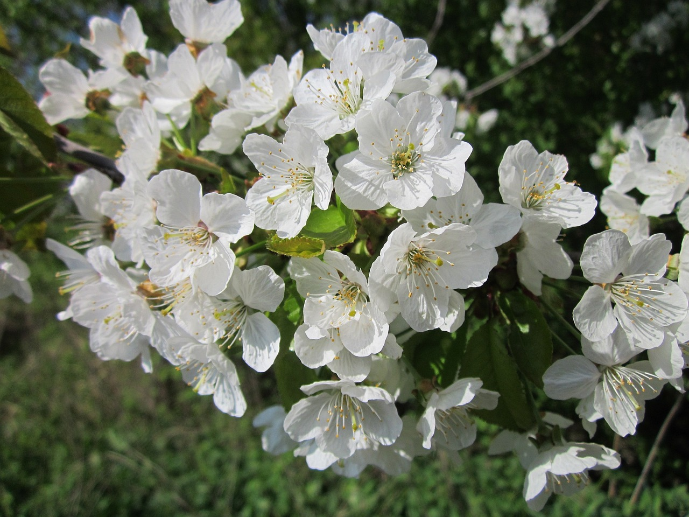

Abutilón (Abutilón): Meditación

Acacia (Acacia): Amor secreto

Acanto (Acanthus): Artificio

Acebo (Ilex): Previsión

Acedera (Rumex acetosa): Afecto paterno

Achicoria (Cichorium intybus): Frugalidad

Acónito (Aconitum): Caballerosidad

Adelfa (Nerium oleander): Ten cuidado

Agapanto (Agapanthus): Carta de amor

Aguileña (Aquilegia): Deserción

Ajo ornamental (Allium): Prosperidad

Álamo blanco (Populus alba): Tiempo

Álamo negro (Populus nigra): Valor

Albahaca (Ocimum basilicum): Odio

Alegría de la casa (Impatiens): Impaciencia

Alerce europeo (Larix decidua): Audacia

Alhelí amarillo (Cheiranthus): Fidelidad en la adversidad

Alhelí de Mahón (Malcolmia marítima): Siempre me parecerás hermosa

Aliso marítimo (Lobularia marítima): Valor más allá de la belleza

Almendro, flor de (Amygdalus communis): Indiscreción

Aloe (Aloe vera): Pena

Altramuz (Lupinus): Imaginación

Amapola (Papaver): Extravagancia fantástica

Amaranto (Amaranthus): Inmortalidad

Amarilis (Hippeastrum): Orgullo

Ameo (Ammi majus): Fantasía

Anagálide (Anagalis arvensis): Cambio

Anémona (Anemone): Abandonado

Angélica (Angélica pachycarpa): Inspiración

Arándano (Vaccinium): Cura para la pena

Arañuela (Nigella damascena): Perplejidad

Arbol de Judas (Cents): Traición

Armería (Armería): Simpatía

Áster (Aster): Paciencia

Ave del paraíso (Strelitzia reginae): Esplendor

Avellano (Corylus): Reconciliación

Avellano mágico (Hamamelis): Hechizo

Avena (Avena sativa): El alma hechizante de la música

Azafrán (Crocus sativus): Cuidado con los excesos

Azalea (Rhododendron): Pasión frágil y efímera

Azucena (Lilum): Majestuosidad

Azulejo (Centaurea cyanus): Bendición

Begonia (Begonia): Se prudente

Boca de dragón (Antirrhinum majus): Presunción
5.jpg)
Botón de oro (Ranunculus acris): Ingratitud

Breccia (Calluna vulgaris): Protección

Brezo (Erica): Soledad

Buganvilla (Bougainvillea spectabilis): Pasión

Bouvardia (Bouvardia): Entusiasmo

Cyperus papyrus (Zantedeschia aethiopica): Modestia

Caléndula (Caléndula): Dolor

Camelia (Camellia): Mi destino está en tus manos

Chamomilla (Matricaria recutita): Energía en la adversidad

Campana de Irlanda (Moluccella laevis): Buena suerte

Campanilla (Campanula): Gratitud

Campanilla de Canterbury (Campanula médium): Constancia

Campanilla de invierno (Galanthus): Consuelo y esperanza

Campanita china (Forsythia): Anticipación

Cp lelabro (Euphorbia): Persistencia

Cp china (Tropaeolum majus): Patriotismo

Cp i común (Cirsium): Misantropía

Carraspique (Iberis): Indiferencia

Castaña (Castanea sativa): Hazme justicia

Celidonia (Chelidonium majus): Futuras alegrías

Cerezo, flor de (Prunus cerasus): Impermanencia

Chumbera (Opuntia): Amor apasionado

Ciclamen (Cyclamen): Tímida esperanza

Cilantro (Coriandrum sativuni): Valor oculto

Cincoenrama (Potentilla): Hija querida

Ciprés (Cupressus): Luto

Ciruela (Prunus domestica): Cumple tus promesas

Clavel amarillo (Dianthus caryophyllus): Desdén

Clavel blanco (Dianthus caryophyllus): Dulce y encantador

Clavel del poeta (Dianthus barbartus): Galantería

Clavel rayado (Dianthus caryophyllus): No puedo estar sin ti

Clavel rojo (Dianthus caryophyllus): Se me parte el corazón

Clavel rosa (Dianthus caryophyllus): Nunca te olvidaré

Clavelina (Dianthus): Date prisa

Clavellina (Dianthus): Amor puro

Clavo de olor (Syzygium aromaticum): Te he amado sin que lo supieras

Clemátide (Clematis): Pobreza

Col común (Brassica oleráceo): Provecho

Cola de zorro (Amaranthus caudatus): Abatido pero no impotente

Cólchico (Colchicum autumnale): Mis mejores días ya pasaron

Conejitos (Delphinium): Levedad

Coreopsis (Coreopsis): Siempre alegre

Corona de novia (Spiraea): Victoria

Cosmos (Cosmos bipinnatus): Gozo del amor y la vida

Cresta de gallo (Celosía): Afectación

Crisantemo (Chrysanthemum): Verdad
:max_bytes(150000):strip_icc()/100394717-b4b2c3837cd349598d4ce6f181b284b3.jpg)
Crocus (Cro cus): Alegría juvenil

Culantrillo de pozo (Adintum capillus-veneris): Secreto

Dafne (Daphne): De otra manera no te tendría

Dalia (Dahlia): Dignidad

Dedalera (Digitalispurpurea): Insinceridad

Díctamo (Dictamnus albus): Parto

Diente de león (Taraxacum): Oráculo rústico

Don Diego de día (Ipomoea): Coquetería

Drácena (Dracaena): Te acercas a una trampa

Edelweiss (Leontopodium alpinum): Noble coraje

Epilobio (Epilobium): Pretensión

Equinácea (Echinacea purpurea): Fuerza y salud

Escabiosa (Scabiosa): Amor desafortunado

Escalera de Jacob (Polemonium): Baja

Escobón (Cytisus): Humildad

Espuela de caballero (Consolida): Ligereza

Estrella de Belén (Ornithogalum umbellatuní): Pureza

Estrellada (Aster amellus): Despedida

Eucalipto (Eucalyptus): Protección

Farolillo chino (Physalis alkekengi): Engaño

Flor de cera (Hoya): Susceptibilidad

Flor de la viuda (Trachelium): Belleza descuidada

Flor de Pascua (Euphorbiapulcherrima): Levanta el ánimo

Flox (Phlox): Nuestras almas son inseparables

Frambuesa (Rubus): Remordimiento

Fresa (Fragaria): Perfección

Fresia (Freesia): Amistad duradera

Fucsia (Fuchsia): Amor humilde

Gallinicas (Lathyrus latifolius): Placer duradero

Gardenia (Gardenia): Refinamiento

Genciana (Gentiana): Valor intrínseco

Geranio de hoja afilada (Pelargonium): Ingenuidad

Geranio de hoja de roble (Pelargonium): Amistad verdadera

Geranio escarlata (Pelargonium): Estupidez

Geranio silvestre (Pelargonium): Devoción inquebrantable

Girasol (Helianthus annuus): Falsas riquezas

Gladiolo (Gladiolus): Me rompes el corazón

Glicina (Wisteria): Bienvenida

Gordolobo (Verbascum): Sé valiente

Gramínea (Poaceae): Sumisión

Granada (Púnica granatum): Insensatez

Granado, flor de (Púnica granatum): Elegancia madura

Grosellero (.Ribes): Tu ceño me matará

Guisante de olor (Lathyrus odoratus): Placeres delicados

Helecho (Polypodiophyta): Sinceridad

Helenio (Helenium): Lágrimas

Heliotropo (Heliotropium): Cariño ferviente

Hibisco (Hibiscus): Belleza delicada

Hiedra (Hederá helix): Fidelidad

Hierba centella (Caltha palustris): Deseo de riquezas

Hierba de Santa María (Tanacetum parthenium): Afecto

Higuera (Ficus carica): Discusión

Hinojo (Foeniculum vulgare): Fuerza

Hipérico (Hypericumperforatum): Superstición

Hortensia (Hydrangea): Apatía

Jacinto azul (Hyacinthus orientalis): Constancia

Jacinto blanco (Hyacinthus orientalis): Belleza

Jacinto de los bosques (Hyacinthoides non-scripta): Constancia

Jacinto morado (Hyacinthus orientalis): Por favor, perdóname

Jazmín blanco (Jasminum ojficinale): Gentileza

Jazmín de Carolina (Gelsemium sempervirens): Separación

Jazmín de Madagascar (Stephanotis floribunda): Matrimonio feliz

Jazmín indio (Jasminum multiflorurrí): Apego

Jazmín solano (Solanum jasminoides): Eres delicioso

Jengibre (Zingiber): Fuerza

Junquillo (Narcissus jonquilla): Deseo

Lantana (Lantana): Rigor

Laurel (Laurus nobilis): Gloria y éxito

Lauro (Laurus nobilis): Cambio pero al morir

Lavanda (Lavandula): Desconfianza

Lechuga (Lactuca sativa): Corazón frío

Liátride (Liatris): Volveré a intentarlo

Lilo (Syringa): Primeras emociones del amor

Limón (Citrus limón): Entusiasmo

Limonero, flor de (Citrus limón): Discreción

Lino (Linum usitatissimum): Percibo tu bondad

Liquen (Parmelia): Desánimo

Lirio (Iris): Mensaje

Lirio de los incas (Alstroemeria): Devoción

Lirio de los valles (Convallaria majalis): Regreso de la felicidad

Lirio de San Juan (Hemerocallis): Coquetería

Lisianto (Eustoma): Aprecio

Lluvia de oro (Laburnum anagyroides): Belleza pensativa

Lobelia (Lobelia): Malevolencia

Loto (Nelumbo mucifera): Pureza Lunaria (Lunaria annua): Honradez

Madreselva (Lonicera): Devoción

Magnolia (Magnolia): Dignidad

Maíz (Zea mays): Riquezas
Majuelo (Crataegus monogyna): Esperanza

Malva real (Alcea): Ambición

Manzana (Malus domestica): Tentación

Manzano, flor de (Malus domestica): Preferencia

Manzano silvestre, flor de (Malus hupehensis): Malhumorado

Margarita africana (Gerbera): Alegría

Margarita de los prados (Bellis): Inocencia

Mejorana (Origanum): Sonrojo

Melocotón (Prunuspérsica): Tus encantos no tienen rival

Melocotonero, flor de (Prunuspérsica): Me tienes cautivo

Membrillero (Cydonia oblonga): Tentación

Menta (Mentha): Calidez de sentimiento

Milenrama (Achillea millefolium): Cura para un corazón roto

Mimosa (Mimosa): Sensibilidad

Mirto (Myrtus): Amor

Mostaza (Brassica): Estoy dolido

Muérdago (Viscum): Supero todos los obstáculos

Musgo (Bryopsida): Amor materno

Nabo (Brassica rapa): Caridad

Naranja (Citrus sinensis): Generosidad

Naranjo, flor de (Citrus sinensis): Tu pureza iguala tu encanto

Narciso (Narcissus): Amor a uno mismo
Narciso (Narcissus): Volver a empezar

Nardo (Polianthes tuberosa): Placeres peligrosos

Nenúfar (Nymphaea): Corazón puro

Nomeolvides (Myosotis): No me olvides

Olivo (Olea europaea): Paz

Onagra (Oenothera biennis): Inconstancia

Orégano (Origanum vulgare): Gozo

Orquídea (Orchidaceae): Belleza refinada

Ortiga (Urtica): Crueldad

Palosanto (Diospyros kaki): Enterradme en medio de la naturaleza

Pamplina (Stellarid): Bienvenida

Paniculata (Gypsophilapaniculata): Amor eterno

Pasionaria (Passiflora): Fe

Patata (Solanum tuberosum): Benevolencia

Pensamiento (Viola): Piensa en mí

Peonía (Paeonia): Ira

Pera (Pyrus): Afecto

Peral, flor de (Pyrus): Consuelo

Perejil (Petroselinum crispum): Festividad

Perifollo (Anthriscus): Sinceridad

Petunia (Petunia): Tu presencia me tranquiliza

Piña (Ananas comosus): Eres perfecto

Pitosporo (Pittosporum undulatum): Fingimiento

Primavera (Prímula): Seguridad
Prímula (Prímula): Infancia

Prímula veris (Prímula veris): Pensativo

Pro tea (Pro tea): Coraje

Pulmonaria (Pulmonaria): Eres mi vida

Ramo de novia (Saxífraga): Afecto

Ranúnculo (Ranunculus asiaticus): Rebosas encanto

Reina de los prados (Filipéndula ulmaria): Inutilidad

Reseda de olor (Reseda odorata): Tus virtudes superan tus encantos

Rododendro (Rhododendron): Advertencia

Romero (Rosmarinas officinalis): Recuerdo

Rosa amarilla (Rosa): Infidelidad

Rosa blanca (Rosa): Un corazón que no conoce el amor

Rosa burdeos (Rosa): Belleza inconsciente

Rosa melocotón claro (Rosa): Modestia

Rosa mosqueta (Rosa rubiginosa): Sencillez

Rosa naranja (Rosa): Fascinación

Rosa roja (Rosa): Amor

Rudbekia (Rudbeckia): Justicia

Ruibarbo (Rheum): Consejo

Salvia (Salvia ojficinalis): Buena salud y larga vida

Saúco (Sambucus): Compasión

Sedum (Sedum): Tranquilidad

Solidago (Solidago): Animo cauteloso

Tanaceto (Tanacetum): Te declaro la guerra

Tilo (Tilia): Amor conyugal

Tomillo (Thymus): Actividad

Trébol blanco (Trifolium): Piensa en mí

Trigo (Triticum): Prosperidad

Trilio blanco (Trillium): Belleza modesta

Trompeta trepadora (Campsis radicans): Fama

Tulipán (Tulipa): Declaración de amor

Uña de gato (Carpobrotus chilensis): Tu mirada me paraliza

Verbena (Verbena): Reza por mí